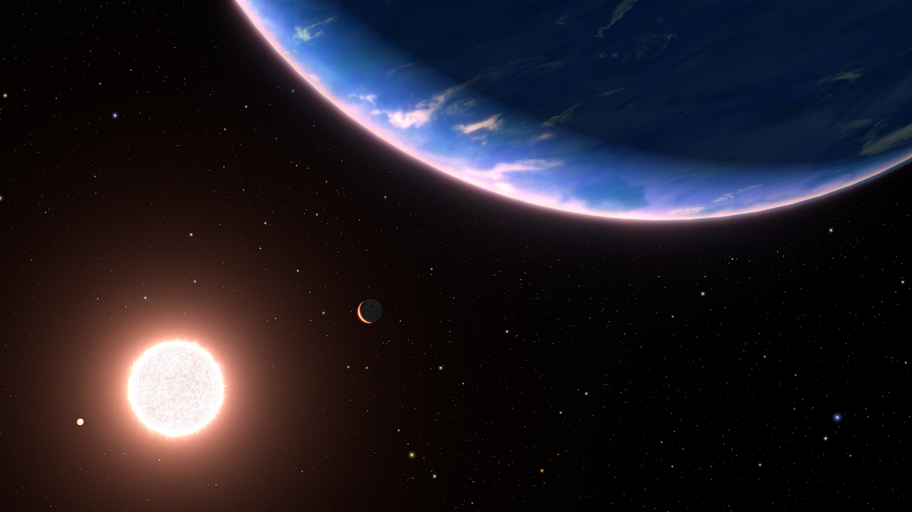

Crystallis is a planet located 97 light years away from Earth orbiting around the star known as Jargon, previously known as "GJ 9827" before the discovery of life in the system.
The system was found for the first time with a NASA telescope in 2017, however, once greater technology was invented, the United Earth Space Administration (daughter of the United Nations,) further analyzed the system in 2141, finding life on Crystallis.
Crystallis is home to a diverse ecosystem, containing many beautiful plants and animals adapted to their ecosystems. All 4,000,000 species have been mapped and categorised thanks to the thousands of people working hard to analyze the first case of alien life found in our system.
The discovery of life on Crystallis has revolutionized our understanding of life in the universe and has opened up new possibilities for exploration and discovery. We emplore you to visit the vast wonders contained with its miniscule pocket of the universe.
Crystallis is a testament to the incredible discovery and potential of life in the universe. It is a reminder that even the smallest celestial bodies can hold the key to understanding our place in the vast cosmos.
We can give you the best experience possible as you travel to this planet. However, according to Section 12 of the Crystallis Planet Charter, you must not leave anything on any part of land not marked by the Crystallis Holdings Administration. Crystallis is a universal treasure belonging to everyone. We must preserve its natural beauty.
Check out our subpages for more information regarding the planet and your experience as you explore its vast beauty.